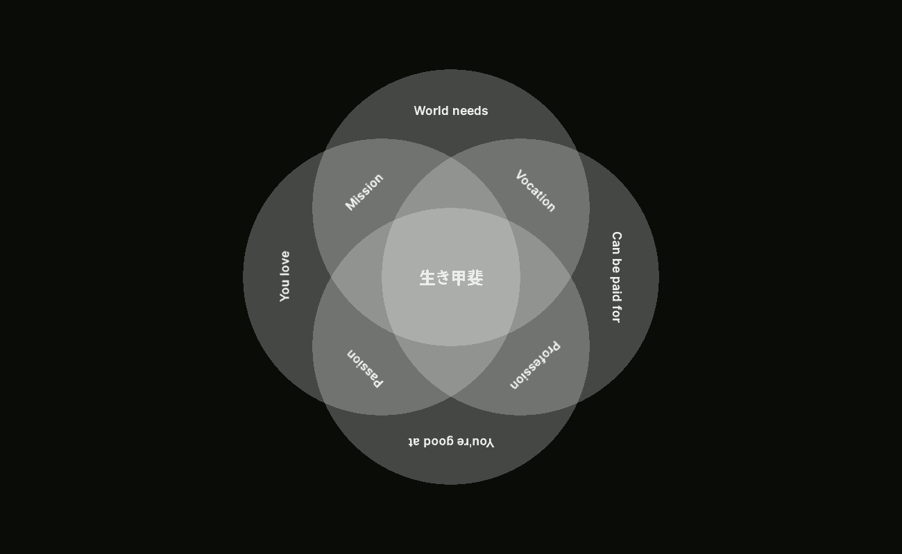

侘寂
Nothing lasts, nothing is finished, and nothing is perfect
Richard Powell, Wabi Sabi Simple
Wabi-sabi is a Japanese philosophy focused on the acceptance of transcience and imperfection in our lives. It teaches us to be content with how things are.
生き甲斐
Ikigai is the "reason for being" — things that make life worthwhile.
He who has a why to live can bear almost any how
Friedrich Nietzsche